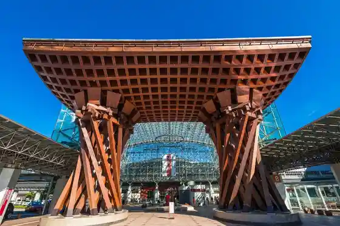
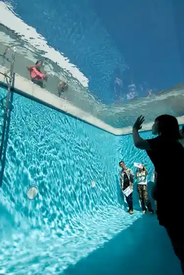
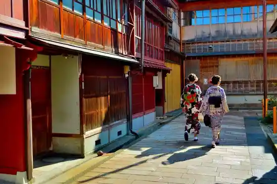

JR Kanazawa Eki (Tsuzumi Mon Motenashi Domu)
Kanazawa, Ishikawa · 076-232-5555 · Official / source link

Kanazawa 21 Seiki Art Museum
Kanazawa, Ishikawa · 076-220-2800 · Official / source link

Higashi Chaya Machi
Kanazawa, Ishikawa · 076-232-5555 · Official / source link

Omi Town Market
Kanazawa, Ishikawa · 076-231-1462 · Official / source link
Korimbo
Kanazawa, Ishikawa · 076-232-5555 · Official / source link
Kenrokuen (Kuni Shitei Tokubetsu Meisho)
Kanazawa, Ishikawa · 076-234-3800 · Official / source link
Shukei Town Chaya Machi
Kanazawa, Ishikawa · 076-220-2194 · Official / source link
Oyama Shrine
Kanazawa, Ishikawa · 076-231-7210 · Official / source link
Omi Town Market no Socho Sansaku
Kanazawa, Ishikawa · 076-231-1462 · Official / source link
Hen Town
Kanazawa, Ishikawa · 076-232-0630 · Official / source link
Saikawa Kosumosurodo
Kanazawa, Ishikawa · Official / source link
Cho Town Buke Yashikiato Kaiwai
Kanazawa, Ishikawa · 076-232-5555 · Official / source link
Kanazawa Shiro Park
Kanazawa, Ishikawa · 076-234-3800 · Official / source link
Kanazawa Eki Tourist Information
Kanazawa, Ishikawa · 076-232-6200 · Official / source link
Ishikawaken Cho 19 Kai Tembo Robii
Kanazawa, Ishikawa · 076-225-1111 · Official / source link
Ishikawa Prefectural Library (Hyakumangoku Biburiobaumu)
Kanazawa, Ishikawa · 076-223-9565 · Official / source link
Nishi Chaya Machi
Kanazawa, Ishikawa · 076-220-2194 · Official / source link
Kenrokuen Kanazawa Shiro Park no Socho Kaien
Kanazawa, Ishikawa · 076-234-3800 · Official / source link
Taiyogaoka no Metasekoia Namiki
Kanazawa, Ishikawa · Official / source link
Ishikawa Prefectural History Museum (Ishikawa Aka Renga Museum)
Kanazawa, Ishikawa · 076-262-3236 · Official / source link
Ishikawa Prefectural Art Museum
Kanazawa, Ishikawa · 076-231-7580 · Official / source link
Buke Yashikiato no Village Ie
Kanazawa, Ishikawa · 076-221-3553 · Official / source link
Kanazawa Chuo Tourist Information
Kanazawa, Ishikawa · 076-254-5020 · Official / source link
Ishiura Shrine
Kanazawa, Ishikawa · 076-231-3314 · Official / source link
Ishikawa Sogo Supotsu Center
Kanazawa, Ishikawa · 076-268-2222 · Official / source link
Ishikawaken Kanazawa Minato Ono Karakuri Memorial Museum
Kanazawa, Ishikawa · 076-266-1311 · Official / source link
Kaori Hayashiji
Kanazawa, Ishikawa · 076-241-3905 · Official / source link
Myo Ritsu Tera / Ninjadera
Kanazawa, Ishikawa · 076-241-0888 · Official / source link
Ishikawaken Kanko Bussan Kan
Kanazawa, Ishikawa · 076-222-7788 · Official / source link
Suzuki Daisetsu Kan
Kanazawa, Ishikawa · 076-221-8011 · Official / source link
Yu Yu Onsen
Kanazawa, Ishikawa · 076-235-1040 · Official / source link
National Kogei Kan
Kanazawa, Ishikawa · Official / source link
Ishikawaken Matsurigoto Kinen Shii no Ki Geihinkan
Kanazawa, Ishikawa · 076-261-1111 · Official / source link
Ishikawaken Bunkyo Hall
Kanazawa, Ishikawa · 076-262-7311 · Official / source link
Ninja Buki Museum
Kanazawa, Ishikawa · 076-245-6450 · Official / source link
Kinjo Onsen Motoyu
Kanazawa, Ishikawa · 076-268-2601 · Official / source link
Kanazawa Keibajo
Kanazawa, Ishikawa · 076-258-5761 · Official / source link
Kanazawa Minato Kuruzutaminaru
Kanazawa, Ishikawa · 076-225-7030 · Official / source link
Ohi Yaki Honke Kamamoto
Kanazawa, Ishikawa · 076-231-0306 · Official / source link
Ginga no Sato Kigo Yama (Kigo Yama Fureai Kenshu Center)
Kanazawa, Ishikawa · 076-229-1141 · Official / source link
Kanazawa Nanso Go Sports Park no Bara Sono
Kanazawa, Ishikawa · 076-241-0882 · Official / source link
Sei Tatsumi Kaku (Kuni Shitei Juyo Bunkazai)
Kanazawa, Ishikawa · 076-221-0580 · Official / source link
Kanazawa Minato Ikiiki Sakana City
Kanazawa, Ishikawa · 076-266-1353 · Official / source link
Sen no Kawa Onsen Yu Raku
Kanazawa, Ishikawa · 076-235-1126 · Official / source link
Kanazawa Kanko Boranteiagaido no Kai (Maidosan)
Kanazawa, Ishikawa · 076-232-5555 · Official / source link
Saikawa
Kanazawa, Ishikawa · Official / source link
Utatsu Yama Park
Kanazawa, Ishikawa · 076-220-2356 · Official / source link
Kuni Shitei Juyo Bunkazai Shima
Kanazawa, Ishikawa · 076-252-5675 · Official / source link
Puranetariumu Hyakuman Hoshi (Ishikawa Kodomo Koryu Center Nai)
Kanazawa, Ishikawa · 076-243-6501 · Official / source link
Hokuriku Seika Kanazawa Sai Takumi
Kanazawa, Ishikawa · 076-243-7155 · Official / source link
Chukaryori Heiwa Ken
Kanazawa, Ishikawa · 076-221-3993 · Official / source link
Kanazawa Umi Mirai Library
Kanazawa, Ishikawa · 076-266-2011 · Official / source link
Ishikawa Seikatsu Kogei Museum
Kanazawa, Ishikawa · 076-262-2020 · Official / source link
Kanazawa Yume no Yu
Kanazawa, Ishikawa · 076-204-2626 · Official / source link
Kanazawa Kageki Za
Kanazawa, Ishikawa · 076-220-2501 · Official / source link
Kaga Yuzen Hall
Kanazawa, Ishikawa · 076-224-5511 · Official / source link
Jiyu Hanabito Mizuhiki Museum
Kanazawa, Ishikawa · 076-244-6441 · Official / source link
Gyokusen In Maru Garden
Kanazawa, Ishikawa · 076-234-3800 · Official / source link
Tamahime no Tera Tentoku In
Kanazawa, Ishikawa · 076-231-4484 · Official / source link
Kingin Haku Kogei Sakuda
Kanazawa, Ishikawa · 076-251-6777 · Official / source link
Yu Yu Onsen Motoyu Sen Game
Kanazawa, Ishikawa · 076-235-1426 · Official / source link
Yu Yu Onsen Soyu Shirasagi Baths
Kanazawa, Ishikawa · 076-235-1380 · Official / source link
Nezumi Tamon Nezumi Tamon Hashi
Kanazawa, Ishikawa · 076-234-3800 · Official / source link
Morihachi Main Shop Kanazawa Kashi Kigata Art Museum
Kanazawa, Ishikawa · 076-262-6251 · Official / source link
Futokoro Hana Ro (Kanazawa Shitei Hozon Kenzobutsu)
Kanazawa, Ishikawa · 076-253-0591 · Official / source link
Kanazawa Utsukushika Zari Asa no
Kanazawa, Ishikawa · 076-251-8911 · Official / source link
Yamato Koji Park (Yamato Shoyuaji So)
Kanazawa, Ishikawa · 076-268-5289 · Official / source link
Kanazawa Ashigaru Museum
Kanazawa, Ishikawa · 076-263-3640 · Official / source link
Moromi Kura
Kanazawa, Ishikawa · 076-267-6638 · Official / source link
ANA Horidei In Kanazawa Sukai
Kanazawa, Ishikawa · 076-233-2233 · Official / source link
Kanazawa Shitsurae
Kanazawa, Ishikawa · 076-251-8899 · Official / source link
Yunizoin Kanazawa Hyakumangoku Tori Genzai (Fopointofurekkusu by Shieraton Kanazawa (Four Points Flex by Sheraton))
Kanazawa, Ishikawa · 076-224-3489 · Official / source link
Io no Sato Oto Campground
Kanazawa, Ishikawa · 076-229-1312 · Official / source link
Uchikawa Supotsu Plaza
Kanazawa, Ishikawa · 076-229-4013 · Official / source link
Asano Kawa Bridge
Kanazawa, Ishikawa · 076-220-2469 · Official / source link
Musashigatsuji
Kanazawa, Ishikawa · 076-232-5555 · Official / source link
Ishikawa Prefectural History Museum Reiwa 8 Nendo Shunki Tokubetsuten (Taka to Kaga Maeda Ie)
Kanazawa, Ishikawa · 076-262-3236 · Official / source link
Toka Yamadai Jo Tera Zazen Experience
Kanazawa, Ishikawa · 076-241-2680 · Official / source link
(Kabu) Shijima Tanimoto Ho
Kanazawa, Ishikawa · 076-241-4173 · Official / source link
ANA Kuraun Plaza Hotel Kanazawa
Kanazawa, Ishikawa · 076-224-6111 · Official / source link
Hotel Kanazawa
Kanazawa, Ishikawa · 076-223-1111 · Official / source link
Io Yama Supotsu Center
Kanazawa, Ishikawa · 076-229-1591 · Official / source link
Kanazawa Sai no Niwa Hotel
Kanazawa, Ishikawa · 076-235-3128 · Official / source link
Kinpaku Hari Experience Kanazawa Katani
Kanazawa, Ishikawa · 076-231-1566 · Official / source link
Ishikawaken Seishonen Sogo Kenshu Center
Kanazawa, Ishikawa · 076-252-0666 · Official / source link
Ishikawa Shi Taka Kinen Bunka Koryu Kan Reiwa 6 Nen (2024 Nen) Noto Han Shima Jishin no Eikyo Niyori Kyukanchu
Kanazawa, Ishikawa · 076-262-5464 · Official / source link
Kanazawa Ritchu Village Kinen Art Museum
Kanazawa, Ishikawa · 076-221-0751 · Official / source link
Ame no Tawaraya
Kanazawa, Ishikawa · 076-252-2079 · Official / source link
Myo Yoshi Tera
Kanazawa, Ishikawa · Official / source link
Tera Town Jiin Gun
Kanazawa, Ishikawa · Official / source link
Kanazawa Ritsu Yasue Kinpaku Kogei Kan
Kanazawa, Ishikawa · 076-251-8950 · Official / source link
Kanazawa Yu Yu Sosaku Forest
Kanazawa, Ishikawa · 076-235-1116 · Official / source link
Ishikawa Prefectural Nogakudo
Kanazawa, Ishikawa · 076-264-2598 · Official / source link
Honda no Mori Park
Kanazawa, Ishikawa · 076-231-6859 · Official / source link
Hotel Viain Kanazawa
Kanazawa, Ishikawa · 076-222-5489 · Official / source link
Bijutsu no Komichi Midori no Komichi
Kanazawa, Ishikawa · Official / source link
Fukumitsu Ya
Kanazawa, Ishikawa · 076-223-1117 · Official / source link
Kanazawa Yu Yu Edo Village
Kanazawa, Ishikawa · 076-235-1267 · Official / source link
Kanazawa Gemazu (Raburaibu ! Hasu no Sora Jogakuin Sukuruaidoru Club) Ofisharutaiappushoppu
Kanazawa, Ishikawa · 076-204-8063 · Official / source link
Kanazawa Chikuon Utsuwa Kan
Kanazawa, Ishikawa · 076-232-3066 · Official / source link
Imai Kinpaku Main Shop Shoppu
Kanazawa, Ishikawa · 076-223-8989 · Official / source link
Kanazawa Daigaku Museum
Kanazawa, Ishikawa · 076-264-5215 · Official / source link
Juichi Dai Ohi Chozaemon Kama Ohi Art Museum Ohi Gyararii (11th Ohi Chozaemon Ware Ohi Museum Ohi Gallery)
Kanazawa, Ishikawa · 076-221-2397 · Official / source link
Kanazawa Nyugu Land Hotel Puresuteji
Kanazawa, Ishikawa · 076-233-1311 · Official / source link
An Gari Saka
Kanazawa, Ishikawa · Official / source link
Kifune Myojin
Kanazawa, Ishikawa · Official / source link
Kanazawa Jizake Kura
Kanazawa, Ishikawa · 076-260-3739 · Official / source link
Io Yama
Kanazawa, Ishikawa · 076-236-1165 · Official / source link
Haku Ichi Main Shop Haku Ko Kan
Kanazawa, Ishikawa · 076-240-8911 · Official / source link
Ume no Hashi
Kanazawa, Ishikawa · Official / source link
Rakugan Moroeya (Main Shop Hyaku Bangai Mise) Nishi Chaya Ka Ryo
Kanazawa, Ishikawa · 076-241-2854 · Official / source link
Kanazawa Kurashi no Museum
Kanazawa, Ishikawa · 076-222-5740 · Official / source link
Ishikawaken Kogyo Shikenjo
Kanazawa, Ishikawa · 076-267-8081 · Official / source link
Utatsu Yama Park Hanashobu Sono Kaboku Sono
Kanazawa, Ishikawa · 076-220-2356 · Official / source link
Kanazawa Nogaku Art Museum
Kanazawa, Ishikawa · 076-220-2790 · Official / source link
Ono Lighthouse
Kanazawa, Ishikawa · Official / source link
Uta Su Shrine
Kanazawa, Ishikawa · Official / source link
Kaga Temari Mari Ya
Kanazawa, Ishikawa · 076-231-7660 · Official / source link
Gannen Tera
Kanazawa, Ishikawa · Official / source link
Daijo Tera Kyuryo Park
Kanazawa, Ishikawa · 076-220-2356 · Official / source link
Ishikawa Gokoku Shrine
Kanazawa, Ishikawa · 076-221-2110 · Official / source link
Taniguchi Kichiro Yoshio Kinen Kanazawa Kenchiku Kan
Kanazawa, Ishikawa · 076-247-3031 · Official / source link
Kanazawa Yu Yu Yumeji Kan
Kanazawa, Ishikawa · 076-235-1112 · Official / source link
Yaoyorozu Honpo
Kanazawa, Ishikawa · 076-213-5148 · Official / source link
Mori no Naka no Workshop Kita to
Kanazawa, Ishikawa · 076-222-0077 · Official / source link
Yori Kan Tei
Kanazawa, Ishikawa · 076-221-0696 · Official / source link
KAMU kanazawa
Kanazawa, Ishikawa · Official / source link
Information on Shogi at the Flower Festival April 19th
Kanazawa, Ishikawa · Official / source link
Shuzo Ri Experience Yachiya Shuzo
Kanazawa, Ishikawa · 076-252-7077 · Official / source link
Utatsu Sanroku Jiin Gun
Kanazawa, Ishikawa · 076-220-2194 · Official / source link
Honsen Tera
Kanazawa, Ishikawa · 076-236-1004 · Official / source link
Kanazawa Furusato Ijin Kan
Kanazawa, Ishikawa · 076-220-2474 · Official / source link
Io Yama Ski Area
Kanazawa, Ishikawa · 076-229-1947 · Official / source link
Shiba Hisashi Shi Hyaku Bangai Mise
Kanazawa, Ishikawa · 076-261-4844 · Official / source link
Daijo Tera
Kanazawa, Ishikawa · 076-241-2680 · Official / source link
Yasue Hachiman Shrine
Kanazawa, Ishikawa · 076-233-3688 · Official / source link
Izumi Kyoka Memorial Museum
Kanazawa, Ishikawa · 076-222-1025 · Official / source link
Mirai Hetsunagu ― Noto Han Shima Jishin to Resukyu Bunkazai ―
Kanazawa, Ishikawa · 076-262-3236 · Official / source link
Tsukuda no Tsukudani Main Shop
Kanazawa, Ishikawa · 0120-610-290 · Official / source link
Miroku Onsen Motoyu
Kanazawa, Ishikawa · 076-221-8096 · Official / source link
Oku Utatsu Yamaken Tami Park
Kanazawa, Ishikawa · 076-264-0395 · Official / source link
Nishida Ie Garden Gyokusen Sono
Kanazawa, Ishikawa · 076-221-0181 · Official / source link
Kanazawa Shinise Memorial Museum
Kanazawa, Ishikawa · 076-220-2524 · Official / source link
Ono O Daiba Park
Kanazawa, Ishikawa · Official / source link
Kaga Yuzen no Mise Eri Hana / Kaga O Kuni Some Museum
Kanazawa, Ishikawa · 076-261-9188 · Official / source link
Ikeda Daibutsu Do
Kanazawa, Ishikawa · 076-222-5550 · Official / source link
Saikawa Bridge
Kanazawa, Ishikawa · 076-220-2469 · Official / source link
Kanazawa Bijutsu Kogei Daigaku Atogyararii
Kanazawa, Ishikawa · Official / source link
Kanazawa Bungei Kan
Kanazawa, Ishikawa · 076-263-2444 · Official / source link
Haku Za Hikari Kura
Kanazawa, Ishikawa · 076-251-8930 · Official / source link
Tamagawa Park
Kanazawa, Ishikawa · 076-220-2356 · Official / source link
Hiraguri Ikoi Forest
Kanazawa, Ishikawa · 076-220-2304 · Official / source link
Teppanyaki Suteki Rokkaku Do
Kanazawa, Ishikawa · 076-252-5115 · Official / source link
Kutani Kosen Kama
Kanazawa, Ishikawa · 076-241-0902 · Official / source link
Kenmin Seaside Park
Kanazawa, Ishikawa · 076-267-2266 · Official / source link
Toyotarentariisu Ishikawa
Kanazawa, Ishikawa · 076-224-0100 · Official / source link
Ichiya Hoshi Seizo Chokubai Tokoro
Kanazawa, Ishikawa · Official / source link
Kanazawa Nishi Chaya Museum
Kanazawa, Ishikawa · 076-247-8110 · Official / source link
Maeda Tosa Shu Ie Museum
Kanazawa, Ishikawa · 076-233-1561 · Official / source link
Asano Kawa
Kanazawa, Ishikawa · Official / source link
Fushimi Tera
Kanazawa, Ishikawa · Official / source link
(Kabu) Meboso Hachirobe Shoten
Kanazawa, Ishikawa · 076-231-6371 · Official / source link
Ashigaru Museum
Kanazawa, Ishikawa · 076-263-3640 · Official / source link
Ishikawa Shi Taka Memorial Park
Kanazawa, Ishikawa · 076-231-6859 · Official / source link
Higashi Chaya Kyukei Kan
Kanazawa, Ishikawa · 076-253-0087 · Official / source link
Haku Za Main Shop
Kanazawa, Ishikawa · 076-251-8941 · Official / source link
Kanazawa Higashi Betsuin De Hana Festival Endai Shogi
Kanazawa, Ishikawa · Official / source link
Noto Ushi Yakiniku Aji Michi En
Kanazawa, Ishikawa · 076-231-7584 · Official / source link
Machi no Ri Jimukyoku
Kanazawa, Ishikawa · Official / source link
Kubo City Otsu Tsurugi Miya
Kanazawa, Ishikawa · 076-221-2894 · Official / source link
Oku Village Ie Residence (Kaga Yaka) Ato
Kanazawa, Ishikawa · Official / source link
Osaki Shrine
Kanazawa, Ishikawa · 076-231-0127 · Official / source link
Naoe Ya Gembe
Kanazawa, Ishikawa · 076-268-1300 · Official / source link
Kanazawa Bunka Horu
Kanazawa, Ishikawa · 076-223-1221 · Official / source link
Tenjimbashi
Kanazawa, Ishikawa · 076-220-2469 · Official / source link
Hokubu Park
Kanazawa, Ishikawa · 076-257-2073 · Official / source link
Yamashina no Okuwa Soka Ishi Sanchi to Oketsu (Kuni Shitei Tennenkinembutsu)
Kanazawa, Ishikawa · 076-229-3450 · Official / source link
Jun Sai Washoku Kofuku
Kanazawa, Ishikawa · 076-225-8080 · Official / source link
Ryotei Kanazawa Sekitei
Kanazawa, Ishikawa · 050-3647-0322 · Official / source link
Takara En Tera
Kanazawa, Ishikawa · 076-231-6050 · Official / source link
Ishikawaken Zeniya Gohe Memorial Museum Sen Go no Kan
Kanazawa, Ishikawa · 076-267-7744 · Official / source link
Haku Ichi Higashiyama Mise
Kanazawa, Ishikawa · 076-253-0891 · Official / source link
Kogei Family 2025
Kanazawa, Ishikawa · 076-262-2020 · Official / source link
Nagano Ponpu (Kabu)
Kanazawa, Ishikawa · 076-253-3656 · Official / source link
Kanazawa Kurafuto Ko Saka
Kanazawa, Ishikawa · 076-265-3320 · Official / source link
Yu Yu Asa City
Kanazawa, Ishikawa · 076-235-8033 · Official / source link
Dai Hasu Tera
Kanazawa, Ishikawa · 076-241-7823 · Official / source link
Cho Town Buke Yashiki Kyukei Kan
Kanazawa, Ishikawa · 076-263-1951 · Official / source link
Kanazawa Shrine
Kanazawa, Ishikawa · 076-261-0502 · Official / source link
Haku Ichi Kanazawa Eki Hyaku Bangai Mise
Kanazawa, Ishikawa · 076-234-0891 · Official / source link
Muro Saisei Memorial Museum
Kanazawa, Ishikawa · 076-245-1108 · Official / source link
Nami Chaku Tera
Kanazawa, Ishikawa · 076-221-1437 · Official / source link
Sei Akedera
Kanazawa, Ishikawa · 076-231-4054 · Official / source link
(Kabu) Nakajima Menya
Kanazawa, Ishikawa · 076-232-1818 · Official / source link
Matere Kanazawa Higashi Chaya Machi
Kanazawa, Ishikawa · 076-256-1763 · Official / source link
Kyu Ren Nami
Kanazawa, Ishikawa · 076-253-9080 · Official / source link
Ishikawa Prefectural Ongakudo
Kanazawa, Ishikawa · 076-232-8111 · Official / source link
Kanazawa Shiroishi Kawa Mon
Kanazawa, Ishikawa · 076-234-3800 · Official / source link
Myoho Tera
Kanazawa, Ishikawa · Official / source link
Tomuro Supotsu Plaza
Kanazawa, Ishikawa · 076-236-1322 · Official / source link
Kannon In
Kanazawa, Ishikawa · Official / source link
O Chaya Art Museum (Kanazawa Shitei Bunkazai)
Kanazawa, Ishikawa · 076-252-0887 · Official / source link
Kagaryori Daimyo Chake
Kanazawa, Ishikawa · 076-231-5121 · Official / source link
Kinpaku Keshohin Senmonten KINKA
Kanazawa, Ishikawa · 076-252-0891 · Official / source link
Kurage Tera
Kanazawa, Ishikawa · Official / source link
Hokuriku Junia Kiosen
Kanazawa, Ishikawa · 076-260-3581 · Official / source link
Naka no Hashi
Kanazawa, Ishikawa · Official / source link
Tokuda Shusei Memorial Museum
Kanazawa, Ishikawa · 076-251-4300 · Official / source link
Kon Sangen Noda Ya
Kanazawa, Ishikawa · 076-221-2870 · Official / source link
Utatsu Yama Tenmangu Shrine
Kanazawa, Ishikawa · Official / source link
W Saka
Kanazawa, Ishikawa · 076-232-5555 · Official / source link
Honda Town
Kanazawa, Ishikawa · 076-232-5555 · Official / source link
Kanazawa Chaya Kappo Tsuzumi
Kanazawa, Ishikawa · 0120-378-223 · Official / source link
Kanazawa Ritsu Tamagawa Library
Kanazawa, Ishikawa · 076-221-1960 · Official / source link
Ishikawaken Konan Sports Park
Kanazawa, Ishikawa · 076-258-5725 · Official / source link
Donyu Tera
Kanazawa, Ishikawa · 076-267-4035 · Official / source link
Shirasagi no Ashiyu
Kanazawa, Ishikawa · 076-235-1380 · Official / source link
Haku Ichi Yasuhara Kojo
Kanazawa, Ishikawa · 076-240-8911 · Official / source link
Sho Tateno Jiin Gun
Kanazawa, Ishikawa · Official / source link
Hakucho Michi
Kanazawa, Ishikawa · 076-220-2356 · Official / source link
Sanko Tera
Kanazawa, Ishikawa · Official / source link
Sakana no Takumi Kita Chin (Hokuchin)
Kanazawa, Ishikawa · 076-237-6000 · Official / source link
Kanazawa Morning Zazen, Kokoro Sei Asa Zazen Experience
Kanazawa, Ishikawa · 076-248-3847 · Official / source link
Tera Town Tori
Kanazawa, Ishikawa · 076-232-5555 · Official / source link
Otomo Ro
Kanazawa, Ishikawa · 076-221-0305 · Official / source link
Orientarutakushii
Kanazawa, Ishikawa · 076-298-2028 · Official / source link
Kanazawa Kimo no Hana Koi
Kanazawa, Ishikawa · 076-204-9414 · Official / source link
Kaga Honda Museum
Kanazawa, Ishikawa · 076-261-0500 · Official / source link
Nyorai Tera
Kanazawa, Ishikawa · 076-221-0833 · Official / source link
Ueno Hachiman Shrine
Kanazawa, Ishikawa · Official / source link
Maita Some Gako Gei
Kanazawa, Ishikawa · Official / source link
Kinjo Rei Sawa
Kanazawa, Ishikawa · 076-261-0502 · Official / source link
Hitai Tani Fureai Park
Kanazawa, Ishikawa · 076-220-2356 · Official / source link
Ranningu Tour Yurutto Ranningu Wo Tanoshi Mo ! Socho no Kanazawa Wo Gokan De Kanji Ru Tabi
Kanazawa, Ishikawa · 076-233-1311 · Official / source link
Kanazawa Chaku Rakuraku
Kanazawa, Ishikawa · Official / source link
Kenmin Suporeku Plaza 3/20 Yori Eigyokaishi
Kanazawa, Ishikawa · 076-247-8999 · Official / source link
Kimo no Rentaru wargo Kanazawa Korimbo Mise
Kanazawa, Ishikawa · 03-4582-4864 · Official / source link
Haku Za Main Shop Haku Zukuri Experience
Kanazawa, Ishikawa · 076-251-8941 · Official / source link
Ono Hiyoshi Shrine
Kanazawa, Ishikawa · Official / source link
Zensei Tera
Kanazawa, Ishikawa · Official / source link
Hiroyoshi Ka Ho
Kanazawa, Ishikawa · 076-231-3509 · Official / source link
Choku Gen Shoyu (Kabu)
Kanazawa, Ishikawa · 076-268-1113 · Official / source link
Kodomo Sakuhin Ten (Dai 19 Kai Namae Hitomoji Ten) Nenju Ika, Shogaku 1 3 5 Nensei no Bu
Kanazawa, Ishikawa · 076-220-2474 · Official / source link
Toyokuni Shrine
Kanazawa, Ishikawa · Official / source link
Kanazawa Yu Yu Midori Village
Kanazawa, Ishikawa · 076-235-8033 · Official / source link
Jukei Tera
Kanazawa, Ishikawa · 076-252-7453 · Official / source link
Higashihara no Mizubasho Jisei Chi
Kanazawa, Ishikawa · 076-220-2469 · Official / source link
Hon Ryu Tera
Kanazawa, Ishikawa · Official / source link
Konan Suihen Park
Kanazawa, Ishikawa · 076-220-2356 · Official / source link
Jodoshinshu Honganji Ha Sho En Tera
Kanazawa, Ishikawa · 076-221-4785 · Official / source link
Matsuzuki Tera
Kanazawa, Ishikawa · Official / source link
Kanazawa Maizo Bunkazai Shuzo Ko
Kanazawa, Ishikawa · 076-240-2371 · Official / source link
Minato Hashi
Kanazawa, Ishikawa · Official / source link
Izumi Kyoka (Taki no Shiroito) Hi
Kanazawa, Ishikawa · 076-222-1025 · Official / source link
Kaga Hanshu Maeda Ie Hakasho
Kanazawa, Ishikawa · 076-220-2469 · Official / source link
Muro Saisei Shihi
Kanazawa, Ishikawa · 076-220-2356 · Official / source link
Kanazawa Tamazushi So Main Shop Seseragi Tori Mise
Kanazawa, Ishikawa · 076-221-2644 · Official / source link
Haku Ichi Kenrokuen Mise
Kanazawa, Ishikawa · 076-260-0891 · Official / source link
Kanazawa Kimo no Rentaru Kokoro Ketsu
Kanazawa, Ishikawa · 076-221-7799 · Official / source link
Iwamoto Kiyoshi Shoten
Kanazawa, Ishikawa · 076-231-5421 · Official / source link
Fotojienikku & Uramichi Saikuringu Tour
Kanazawa, Ishikawa · 076-248-3847 · Official / source link
Kyu Zaimoku Town Tori
Kanazawa, Ishikawa · 076-232-5555 · Official / source link
Shogyo Tei
Kanazawa, Ishikawa · 050-3155-1010 · Official / source link
Io Yama Prefectural Nature Park
Kanazawa, Ishikawa · 076-225-1477 · Official / source link
Nagayasu Tera
Kanazawa, Ishikawa · 076-229-0228 · Official / source link
Cho Town Buke Yashikiato Chida Ie Garden
Kanazawa, Ishikawa · 080-8735-9695 · Official / source link
Ningyo Museum (Dolls Museum)
Kanazawa, Ishikawa · 076-241-0015 · Official / source link
Muro Saisei Bungaku Hi
Kanazawa, Ishikawa · Official / source link
Ketsu no Shrine
Kanazawa, Ishikawa · Official / source link
Kanazawa Jomon Warudo
Kanazawa, Ishikawa · 076-269-2451 · Official / source link
Tsuda Koma Kogyo (Kabu)
Kanazawa, Ishikawa · 076-242-1110 · Official / source link
Ishimori Mokko Ki Ko Bo (Yu)
Kanazawa, Ishikawa · 076-243-2333 · Official / source link
HOTEL Kanazawa Kenroku So
Kanazawa, Ishikawa · 076-232-1239 · Official / source link
Saisei no Michi
Kanazawa, Ishikawa · 076-232-5555 · Official / source link
(Kabu) Ai O Deta Kiki
Kanazawa, Ishikawa · 076-260-3377 · Official / source link
Chobo no Oka (Utatsu Yama Park)
Kanazawa, Ishikawa · 076-220-2356 · Official / source link
THE TEA SHOP CHANOMI (Cha no Mi) Omi Town City Ba 2 Go Mise
Kanazawa, Ishikawa · 076-213-6501 · Official / source link
Toun Tera
Kanazawa, Ishikawa · 076-241-2576 · Official / source link
Shorinji
Kanazawa, Ishikawa · Official / source link
Kyo Tera
Kanazawa, Ishikawa · 076-221-4873 · Official / source link
Kitayama Do
Kanazawa, Ishikawa · 076-231-5288 · Official / source link
Hokuriku Gakuin Uin Kan
Kanazawa, Ishikawa · 076-231-7386 · Official / source link
Owari Town Town Tami Bunka Kan
Kanazawa, Ishikawa · 076-222-7670 · Official / source link
Nosa Higashi Chaya Machi Mise
Kanazawa, Ishikawa · 076-255-2270 · Official / source link
Jinmei Miya
Kanazawa, Ishikawa · Official / source link
Hayashi Yu Tera
Kanazawa, Ishikawa · Official / source link
Ryu Kuni Tera
Kanazawa, Ishikawa · Official / source link
Myokaku Tera
Kanazawa, Ishikawa · 076-267-2320 · Official / source link
Manari Tera
Kanazawa, Ishikawa · 076-252-6060 · Official / source link
Shiki no Teburu
Kanazawa, Ishikawa · 076-265-6155 · Official / source link
Suwa Shrine
Kanazawa, Ishikawa · Official / source link
Tsubakihara Tenmangu Shrine
Kanazawa, Ishikawa · Official / source link
Ishikawa Prefectural Shizen Shi Museum
Kanazawa, Ishikawa · 076-229-3450 · Official / source link
Kyu Kaga Hanshi Takada Ieato
Kanazawa, Ishikawa · 076-263-3640 · Official / source link
Hikozo Ryokuchi
Kanazawa, Ishikawa · 076-220-2356 · Official / source link
Bun Takashi Tera
Kanazawa, Ishikawa · Official / source link
Seiho Tera
Kanazawa, Ishikawa · Official / source link
Gokuraku Tera
Kanazawa, Ishikawa · Official / source link
Gesshin Tera
Kanazawa, Ishikawa · 076-251-0492 · Official / source link
Ote Hori
Kanazawa, Ishikawa · Official / source link
En Cho Tera
Kanazawa, Ishikawa · Official / source link
(Bungaku no Kokyo) Hi (Baba Shogakko Nai)
Kanazawa, Ishikawa · Official / source link
Buke Residence Terashima Kurabito Tei
Kanazawa, Ishikawa · 076-224-2789 · Official / source link
Aburatori Kami Senmonten
Kanazawa, Ishikawa · 076-253-1891 · Official / source link
Kinjo Rei Sawa
Kanazawa, Ishikawa · Official / source link
Myokoku Tera
Kanazawa, Ishikawa · Official / source link
Noda Yama (Maeda Ie Bochi)
Kanazawa, Ishikawa · 076-220-2228 · Official / source link
Senju In
Kanazawa, Ishikawa · Official / source link
Zuisenji
Kanazawa, Ishikawa · Official / source link
Gyo Nishi Tera
Kanazawa, Ishikawa · Official / source link
Akiba Shrine
Kanazawa, Ishikawa · Official / source link
Shibuya Kogyo
Kanazawa, Ishikawa · 076-262-1201 · Official / source link
O Cha no Azuma Sono
Kanazawa, Ishikawa · 076-258-4000 · Official / source link
Den Izumi Tera
Kanazawa, Ishikawa · 076-268-3166 · Official / source link
Kosaka Shrine
Kanazawa, Ishikawa · Official / source link
Hasu Masa Tera
Kanazawa, Ishikawa · Official / source link
Myo En Tera
Kanazawa, Ishikawa · Official / source link
Yuhi Tera Kenmin Shizen Sono
Kanazawa, Ishikawa · 076-251-7554 · Official / source link
Hosen Tera
Kanazawa, Ishikawa · Official / source link
Nado Gan Tera
Kanazawa, Ishikawa · Official / source link
Eikyu Tera
Kanazawa, Ishikawa · Official / source link
JR Nishinihon Rentaka & Riisu (Eki Rentaka)
Kanazawa, Ishikawa · 0800-555-4190 · Official / source link
Muro Saisei Haka
Kanazawa, Ishikawa · Official / source link
Kanazawa Seifun (Kabu)
Kanazawa, Ishikawa · 076-241-3141 · Official / source link
Higashiyama Rennyo Do
Kanazawa, Ishikawa · 076-261-6432 · Official / source link
to Gaku Tera
Kanazawa, Ishikawa · Official / source link
Jo Kyo Tera
Kanazawa, Ishikawa · Official / source link
Jo An Tera
Kanazawa, Ishikawa · Official / source link
Nishi Yo Tera
Kanazawa, Ishikawa · Official / source link
Geba Jizo
Kanazawa, Ishikawa · Official / source link
Katsura Iwa Tera
Kanazawa, Ishikawa · Official / source link
O Byo Tani (Ken Shitei Historic Site)
Kanazawa, Ishikawa · 076-225-1841 · Official / source link
Kinpaku Juerii Gold-Knot (Gorudo no Tto)
Kanazawa, Ishikawa · 076-205-6202 · Official / source link
Tatsumi Yosui
Kanazawa, Ishikawa · Official / source link
Kuni Shitei Historic Site Kaetsu Kokkyo Shiroato Gun Oyobi Michi - Shokon Castle Ruins -
Kanazawa, Ishikawa · 076-269-2451 · Official / source link
Shinke Tei Nagaya Mon
Kanazawa, Ishikawa · Official / source link
Ono Minato Shrine
Kanazawa, Ishikawa · 076-267-0522 · Official / source link
Yachiya Shuzo (Jizake Taniuchi Ya)
Kanazawa, Ishikawa · 076-252-7077 · Official / source link
Ryo Gan Tera
Kanazawa, Ishikawa · Official / source link
Rai Kyo Tera
Kanazawa, Ishikawa · Official / source link
Eifuku Tera
Kanazawa, Ishikawa · 076-231-0198 · Official / source link
Hon'in Tera
Kanazawa, Ishikawa · Official / source link
Higashiyama Ontake Shrine
Kanazawa, Ishikawa · Official / source link
Hikari Sen Tera
Kanazawa, Ishikawa · Official / source link
Shamisen no Fukushima
Kanazawa, Ishikawa · 076-252-3703 · Official / source link
(Kabu) Nosa
Kanazawa, Ishikawa · 076-263-8121 · Official / source link
Ono Sho Yosui
Kanazawa, Ishikawa · Official / source link
Cha no Yu Suzu Oki
Kanazawa, Ishikawa · 076-200-9120 · Official / source link
Ame Takara In
Kanazawa, Ishikawa · 076-241-5646 · Official / source link
Shingyoji
Kanazawa, Ishikawa · Official / source link
Ganjo Tera
Kanazawa, Ishikawa · Official / source link
Renge Tera
Kanazawa, Ishikawa · Official / source link
Myoshoji
Kanazawa, Ishikawa · Official / source link
Takara Shu Tera
Kanazawa, Ishikawa · Official / source link
Toku Ryu Tera
Kanazawa, Ishikawa · Official / source link
Daien Tera
Kanazawa, Ishikawa · Official / source link
Sugawara Shrine
Kanazawa, Ishikawa · Official / source link
Suzuki Daisetsu Seitan Chi Kinenhi
Kanazawa, Ishikawa · Official / source link
Kokaku Tera
Kanazawa, Ishikawa · Official / source link
Kakurin Tera
Kanazawa, Ishikawa · Official / source link
Shinkoru (Kabu)
Kanazawa, Ishikawa · 076-237-7740 · Official / source link
Ki Atsushi Saka Promenade
Kanazawa, Ishikawa · Official / source link
Izumi Kyoka Kuhi (Utatsu Sanko Ennai)
Kanazawa, Ishikawa · 076-222-1025 · Official / source link
Shoryo Byoin Seido
Kanazawa, Ishikawa · Official / source link
Nishimurajigu
Kanazawa, Ishikawa · 076-223-2727 · Official / source link
Ken Sei Tera
Kanazawa, Ishikawa · Official / source link
Myo Yasushi Tera
Kanazawa, Ishikawa · Official / source link
Hon Mitsudera
Kanazawa, Ishikawa · Official / source link
Chokyu Tera
Kanazawa, Ishikawa · Official / source link
Shinren Sha
Kanazawa, Ishikawa · Official / source link
Uta Su Jinja Okunomiya
Kanazawa, Ishikawa · Official / source link
Owari Town
Kanazawa, Ishikawa · 076-232-5555 · Official / source link
Kuratsuki Yosui
Kanazawa, Ishikawa · Official / source link
Sokei Hall
Kanazawa, Ishikawa · 076-257-4277 · Official / source link
Ishi Batsu Saka (W Saka)
Kanazawa, Ishikawa · Official / source link
Sho Sho Tera
Kanazawa, Ishikawa · Official / source link
Kan Taya House
Kanazawa, Ishikawa · Official / source link
Tera Town Shosei Sono
Kanazawa, Ishikawa · 076-220-2356 · Official / source link
Hongyo Tera
Kanazawa, Ishikawa · Official / source link
Soku Gan Tera
Kanazawa, Ishikawa · Official / source link
Nishi Gen Tera
Kanazawa, Ishikawa · Official / source link
Kongoji
Kanazawa, Ishikawa · Official / source link
Takagishi Tera
Kanazawa, Ishikawa · Official / source link
Genmon Tera
Kanazawa, Ishikawa · Official / source link
Enkoji
Kanazawa, Ishikawa · Official / source link
Anraku Tera
Kanazawa, Ishikawa · Official / source link
(Kabu) Nau
Kanazawa, Ishikawa · 076-240-2222 · Official / source link
Togami Kogyo (Kabu)
Kanazawa, Ishikawa · 076-268-1167 · Official / source link
Hosho Tera
Kanazawa, Ishikawa · 076-287-3870 · Official / source link
Senshu Tera
Kanazawa, Ishikawa · Official / source link
Jotoku Tera
Kanazawa, Ishikawa · Official / source link
Myoden Tera
Kanazawa, Ishikawa · Official / source link
Boko Dai (Utatsu Yama Park)
Kanazawa, Ishikawa · 076-220-2356 · Official / source link
Ritsuzo Tera
Kanazawa, Ishikawa · Official / source link
Myo Tera
Kanazawa, Ishikawa · Official / source link
Toku Ho Tera
Kanazawa, Ishikawa · Official / source link
Tai Sugawara Shrine
Kanazawa, Ishikawa · Official / source link
Zendo Tera
Kanazawa, Ishikawa · Official / source link
Jofuku Tera
Kanazawa, Ishikawa · Official / source link
Matsuyama Tera
Kanazawa, Ishikawa · Official / source link
Tama Ryu Tera
Kanazawa, Ishikawa · Official / source link
Gyokusen Tera
Kanazawa, Ishikawa · Official / source link
Kyu Oku Village Ie Kamiyashiki Dobei (Kanazawa Iryo Center Dobei)
Kanazawa, Ishikawa · Official / source link
Tenjin Town Tori
Kanazawa, Ishikawa · 076-232-5555 · Official / source link
Hokuriku Gakuin Uin Kan
Kanazawa, Ishikawa · Official / source link
Buraidaru Mitsu Wa
Kanazawa, Ishikawa · 076-221-3188 · Official / source link
Owari Town Shinise Koryu Kan
Kanazawa, Ishikawa · 076-234-6666 · Official / source link
Zuiko Tera
Kanazawa, Ishikawa · Official / source link
Kiso Saka
Kanazawa, Ishikawa · Official / source link
Shiipiiyu
Kanazawa, Ishikawa · 076-241-0001 · Official / source link
Kanazawa Bijutsu Kurabu
Kanazawa, Ishikawa · 076-262-0391 · Official / source link
Yome Saka
Kanazawa, Ishikawa · Official / source link
En Sho Tera
Kanazawa, Ishikawa · Official / source link
Jo Mitsudera
Kanazawa, Ishikawa · Official / source link
Hon Kore Tera
Kanazawa, Ishikawa · Official / source link
Tenjin Saka
Kanazawa, Ishikawa · Official / source link
Sei Gaku Tera
Kanazawa, Ishikawa · Official / source link
Joen Tera
Kanazawa, Ishikawa · Official / source link
Jitsu So Tera
Kanazawa, Ishikawa · Official / source link
Mare Okina In
Kanazawa, Ishikawa · Official / source link
In Toku Tera
Kanazawa, Ishikawa · Official / source link
Takehisayumeji Bungaku Hi
Kanazawa, Ishikawa · 076-235-1112 · Official / source link
Pan Workshop Babylon
Kanazawa, Ishikawa · 076-268-6779 · Official / source link
Kitamura Somemono Mise
Kanazawa, Ishikawa · 076-213-6909 · Official / source link
Tsunematsu Tera
Kanazawa, Ishikawa · Official / source link
Oya Ie
Kanazawa, Ishikawa · Official / source link
Kaneishi Sen Go Park
Kanazawa, Ishikawa · Official / source link
Honpo Tera
Kanazawa, Ishikawa · Official / source link
Honzo Tera
Kanazawa, Ishikawa · Official / source link
Tokuda Shusei Bungaku Hi
Kanazawa, Ishikawa · Official / source link
Sen Cho Tera
Kanazawa, Ishikawa · Official / source link
Makoto Cho Tera
Kanazawa, Ishikawa · Official / source link
Kotoku Tera
Kanazawa, Ishikawa · Official / source link
Kaku Hayashiji
Kanazawa, Ishikawa · Official / source link
Kai Zendera
Kanazawa, Ishikawa · Official / source link
Kyu Shin Town Kaiwai
Kanazawa, Ishikawa · 076-232-5555 · Official / source link
Kimono Saronkurosu
Kanazawa, Ishikawa · Official / source link
Culture Lab Nomachi
Kanazawa, Ishikawa · 090-1742-8382 · Official / source link
Kanazawa Gakusei no Machi City Tami Koryu Kan
Kanazawa, Ishikawa · 076-255-0162 · Official / source link
Ryutoku Tera
Kanazawa, Ishikawa · Official / source link
Tada Nen Tera
Kanazawa, Ishikawa · Official / source link
Ken Shu Tera
Kanazawa, Ishikawa · Official / source link
Myofuku Tera
Kanazawa, Ishikawa · Official / source link
Matsuo Shrine
Kanazawa, Ishikawa · Official / source link
Dento In
Kanazawa, Ishikawa · Official / source link
Zenmyo Tera
Kanazawa, Ishikawa · Official / source link
Kyu Mambo Tera
Kanazawa, Ishikawa · Official / source link
Keion Tera
Kanazawa, Ishikawa · Official / source link
Zuiun Tera
Kanazawa, Ishikawa · Official / source link
Ryuen Tera
Kanazawa, Ishikawa · Official / source link
Hon Cho Tera
Kanazawa, Ishikawa · Official / source link
Honsho Tera
Kanazawa, Ishikawa · Official / source link
Yasaka Gosan
Kanazawa, Ishikawa · Official / source link
Cho Shu Tera
Kanazawa, Ishikawa · Official / source link
Seigan Tera
Kanazawa, Ishikawa · Official / source link
Ji Kumo Tera
Kanazawa, Ishikawa · Official / source link
Shoun Iori
Kanazawa, Ishikawa · 090-5689-8328 · Official / source link
Hasu Kaku Tera
Kanazawa, Ishikawa · Official / source link
Ryuun Tera
Kanazawa, Ishikawa · Official / source link
Hongaku Tera
Kanazawa, Ishikawa · Official / source link
Den Izumi Tera
Kanazawa, Ishikawa · Official / source link
Rissho Tera
Kanazawa, Ishikawa · Official / source link
Ikkan In
Kanazawa, Ishikawa · Official / source link
Ryu Gen Tera
Kanazawa, Ishikawa · Official / source link
Ji Mei Tera
Kanazawa, Ishikawa · Official / source link
Sanpo Tera
Kanazawa, Ishikawa · Official / source link
Ko Masa Tera
Kanazawa, Ishikawa · Official / source link
Kuniyasu Tera
Kanazawa, Ishikawa · Official / source link
Soryu Tera
Kanazawa, Ishikawa · Official / source link
Yoshinori Tera
Kanazawa, Ishikawa · Official / source link
Mitsunari Tera
Kanazawa, Ishikawa · Official / source link
Gen Hikari In
Kanazawa, Ishikawa · Official / source link
Gessho Tera
Kanazawa, Ishikawa · Official / source link
Uma Saka
Kanazawa, Ishikawa · Official / source link
Honmyo Tera
Kanazawa, Ishikawa · Official / source link
Nishi Zen Tera
Kanazawa, Ishikawa · Official / source link
Hiroshi Gan In
Kanazawa, Ishikawa · 076-243-8024 · Official / source link
Yu Yama In
Kanazawa, Ishikawa · Official / source link
Taka Gen In
Kanazawa, Ishikawa · Official / source link
Kanazawa Yakusho
Kanazawa, Ishikawa · 076-220-2111 · Official / source link